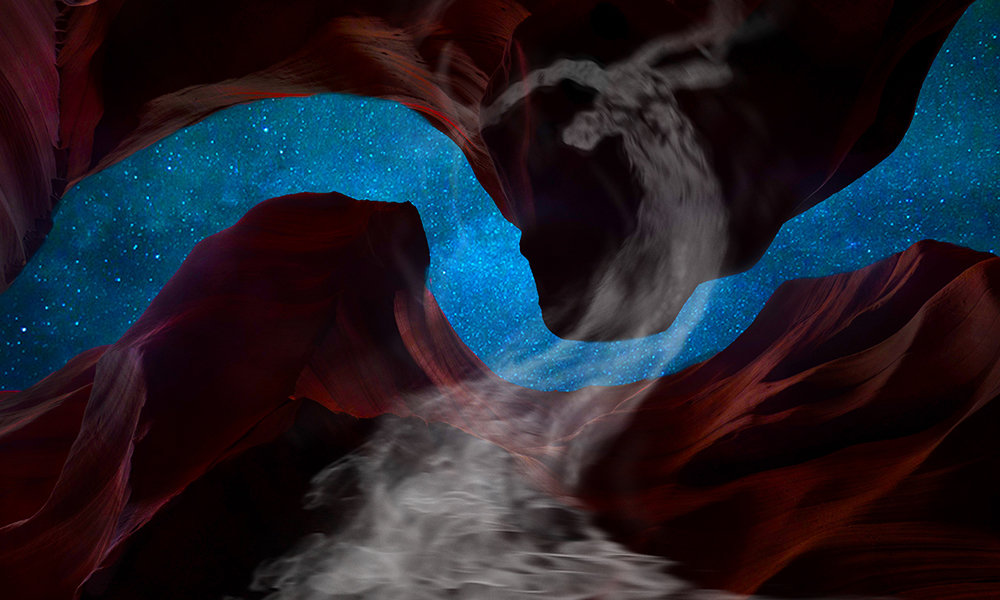
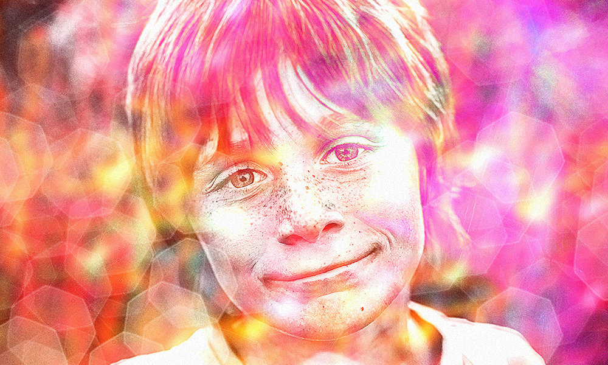
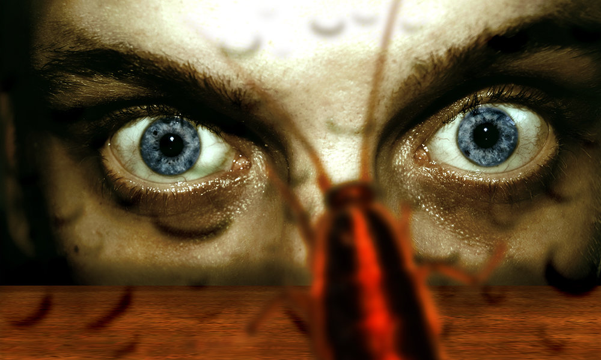
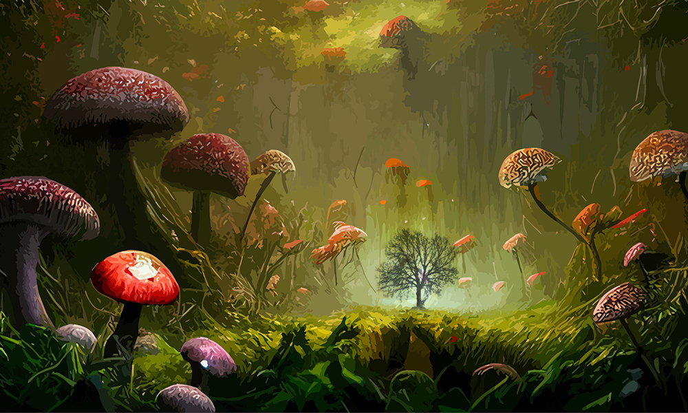
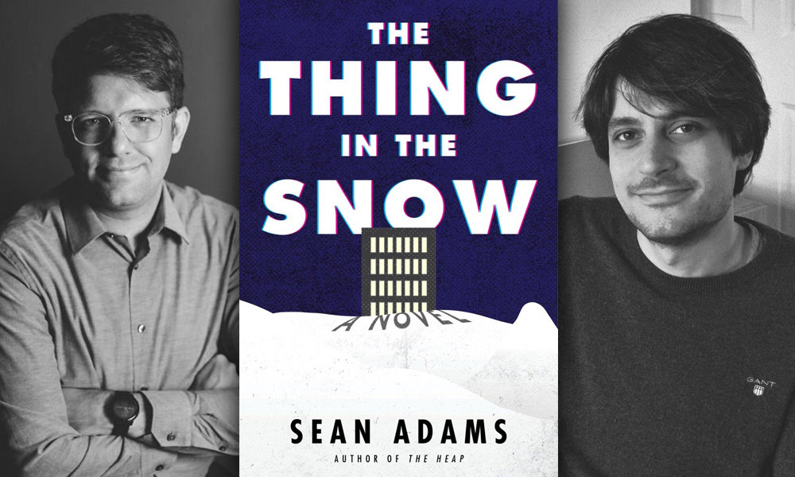
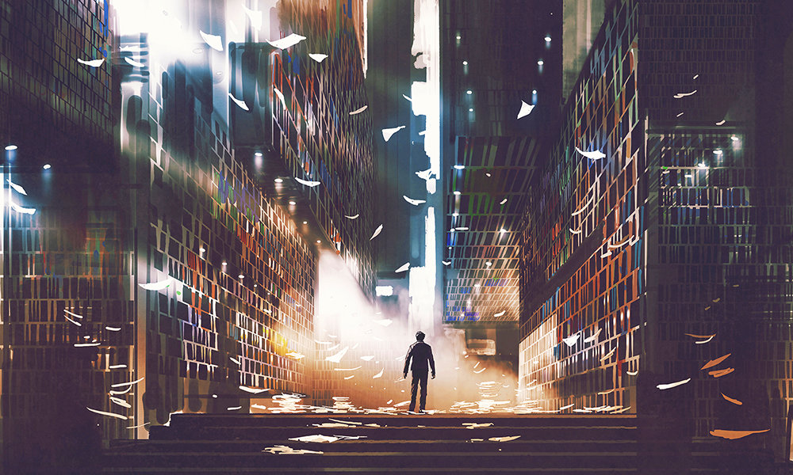
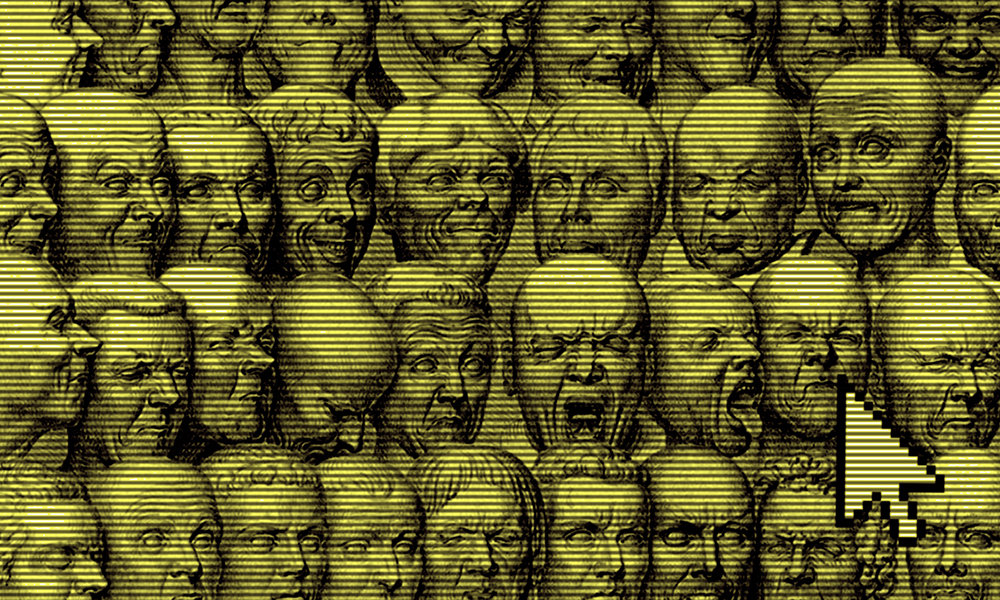

Let's start at the very beginning, well known to be a very good place to start since long before the written word, maybe even since before language itself. C. Owen Loftus gives us a story that is, of course, composed wholly of words, because we poor creatures must resort to clumsy tools in order to express the things that are, in some sense, unspeakable.

Issues of Mythaxis do not cleave to themes, and yet sometimes circumstance intervenes, at least in part. Such was the case this time, and Lucy Zhang's solemn sequence of moments and reflections here provides the first of three stories each very distinct, but all of which ring with alienation.

Not every adolescent dynamic is a bleak one, even when events take a turn for the worse. Still, the starkest traumas of childhood can be as simple and commonplace as arising from the gaining and losing of friends. But Andrew Jensen's story suggests that maybe good nature heals all wounds.

L.P. Ring's story arrived draped in caveats, that it was more psychologically weird than a piece of speculative fiction. Nicely timed, because being also crime fiction it intersected neatly with my urge to extend Mythaxis to include that genre too. Thus we return to our non-theme for a second dose of alienation – or do we? I guess that might be a matter of perspective…

'Those who cannot remember the past are condemned to repeat it.' So said the marvellously named Jorge Agustín Nicolás Ruiz de Santayana y Borrás, Yet even the snappiest aphorism does not a story make, so rejoice that Sandee Bree Breathnach put her slightly shorter moniker to this ecofantastical expression of the same.

In this, my third year as Mythaxis Editor, it's time to shake things up around here with the first of two more-or-less non-fiction features. In his guise as 'The Bookchemist', Mattia Ravasi has been vlogging about long-form fiction for almost eight years, and I'm delighted to have him here reviewing contemporary speculative fiction. So, without further ado…

Our second new feature is a brief collection of further reading recommendations. There are many good magazines out there publishing a lot of great short stories, and it’s far too easy for little gems of both categories to go overlooked. Therefore, in each issue we would like to nominate a trio of recent pieces from around the web that you’ll find well worth sampling.
Whatever else may change, Mythaxis is always going to end on a story. Barry Charman sees us out with a third tale that has more than a hint of alienation to it – though whether alienation is a state of suffering or grace is very much in the eye of the beholder.
